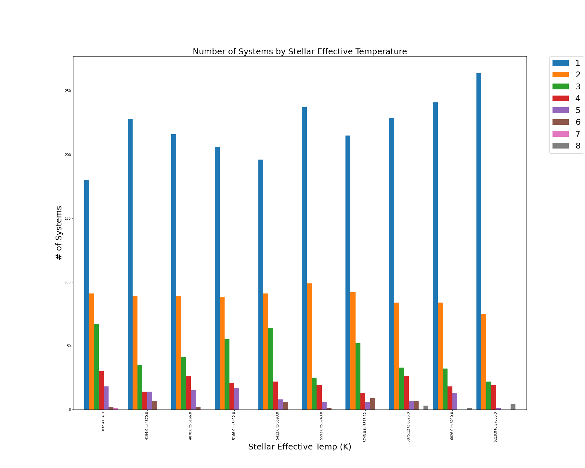

Stellar Comparisons
The graphs to the left represent the mass, density and temperature of particular stars and
the way that these factors effect the amount of planets that each star can support.
Please click on the corresponding graph to see further analysis!
